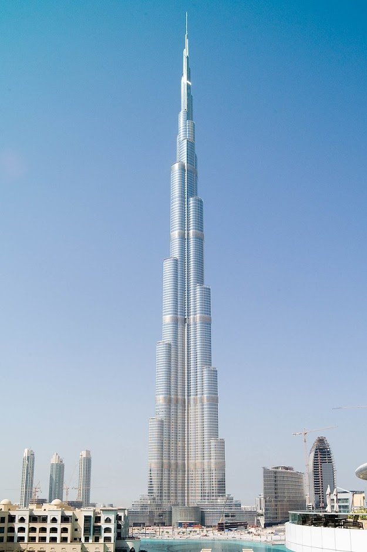

Дубайская башня
«Бурдж-Хали́фа» (араб. برج خليفة — «Башня Халифы», до 2010 года называлась «Бурдж-Дубай» — «Дубайская башня») — сверхвысотный небоскрёб высотой 828 метров в Дубае (ОАЭ), самое высокое и самое многоэтажное здание, самое высокое сооружение, единственный 828-метровый и 163-этажный небоскрёб в мире. Уступчатая форма здания напоминает сталагмит.
«Дубайская башня» проектировалась как «город в городе» — с собственными газонами, бульварами и парками. Общая стоимость сооружения — 1,5 млрд долларов. Проект небоскрёба был разработан американским архитектурным бюро Skidmore, Owings and Merrill, которое также проектировало Уиллис-тауэр в Чикаго, Всемирный торговый центр 1 в Нью-Йорке и многие другие известные здания. Автор проекта — американский архитектор Эдриан Смит, уже имевший опыт проектирования подобных сооружений (в частности, он участвовал в проектировании небоскрёба Цзинь Мао в Китае высотой 420 м). В качестве генерального подрядчика застройки было выбрано строительное подразделение южнокорейской компании Samsung, которая ранее участвовала в строительстве башен-близнецов Петронас в Куала-Лумпуре.
Хронология
- В феврале 2007 года высота сооружения превзошла высоту Уиллис-тауэр (443,2 м).
- 21 июля 2007 года высота превзошла высоту Тайбэя 101 (509,2 м).
- К 15 сентября 2007 года высота составила 555,3 м, побив рекорд для свободно стоящего сооружения, который до этого на протяжении 31 года удерживала Си-Эн Тауэр в Торонто.
- На 24 октября 2007 года высота 156-этажной железобетонной конструкции составила 585,7 м. Оставшиеся 232 м будут представлять собой стальной шпиль.
- В январе 2008 года высота составила 589,5 м.
- 5 февраля 2008 года высота составила 604,9 м (завершено 159 этажей).
- 8 апреля 2008 года высота достигла 630 м над земной поверхностью.
- 12 мая 2008 года — 636,9 м, 164 завершённых этажа.
- 1 сентября 2008 года — 687,9 м (2257 футов)
- 26 сентября 2008 года — 707 м.
- 30 декабря 2008 года — 780 м.
- 17 января 2009 года достигнута заявленная высота 818 м.